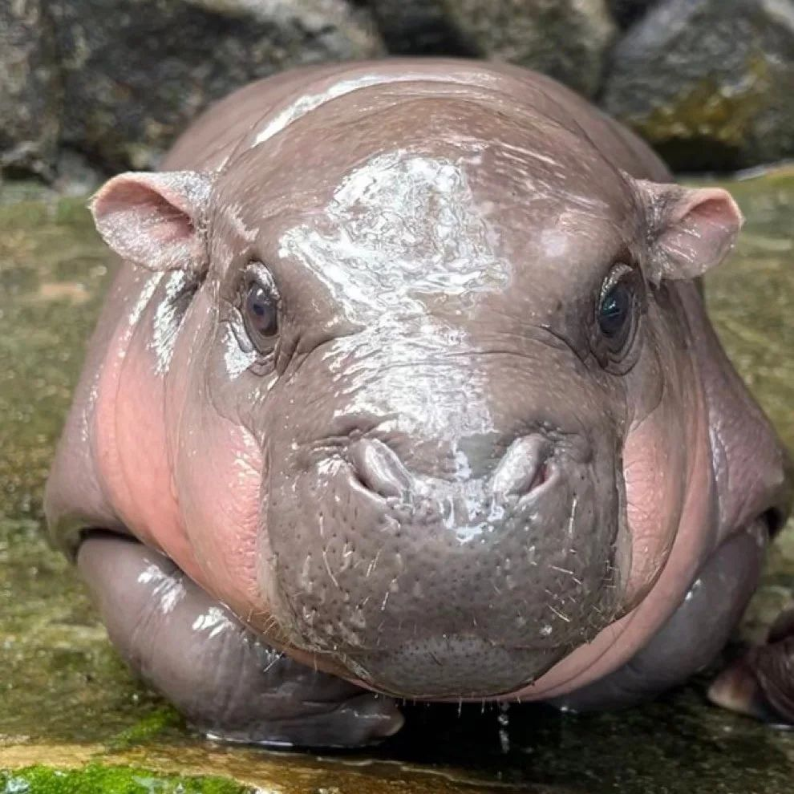

หมูเด้ง
หมูเด้ง เป็นฮิปโปโปเตมัสแคระเพศเมียที่อาศัยอยู่ในสวนสัตว์เปิดเขาเขียว อำเภอศรีราชา จังหวัดชลบุรี ซึ่งมีชื่อเสียงขึ้นในเดือนกันยายน พ.ศ. 2567 เมื่อมีภาพของหมูเด้งเป็นอินเทอร์เน็ตมีม
ประวัติ
หมูเด้ง เกิดเมื่อวันที่ 10 กรกฎาคม พ.ศ. 2567 มีพ่อแม่คือโทนี่และโจน่า ชื่อของหมูเด้งได้รับเลือกผ่านการลงคะแนนของประชาชน โดยมีผู้ลงคะแนนให้กับชื่อ "หมูเด้ง" มากกว่า 20,000 คน หมูเด้งมีพี่หกตัว รวมถึง "หมูตุ๋น" ซึ่งเป็นฮิปโปโปเตมัสแคระที่ได้รับความนิยมของสวนสัตว์เปิดเขาเขียวเช่นกัน